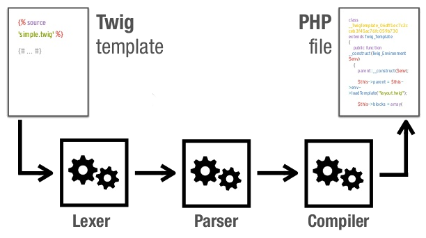

Twig
Julien Dubreuil & Olivier Pierre
Cette présentation est déjà disponible !!
opi.github.io/twig-drupalcamp
github.com/opi/twig-drupalcamp
Développeur & Themeur Drupal
freelance & NVOS
Développeur & Themeur Drupal
Commerce Guys
Moteur de template PHP
Par Fabien Potencier, créateur de Symfony
A la base Twig était un moteur de template ecrit en python "Jinja2 " par Armin Ronacher.
Repris par Fabien Potencier en 2009 pour accomplir son plan de domination du monde.

twig.sensiolabs.org/doc/documentation
Le caractère important est l'accolade
{ }
{# Ici un commentaire #}
A utiliser pour les descriptions et commentaires.
{{ title }}
Équivalent php template:
<?php print $title; ?>
{{ node.field_description }}
<div {{item.attributes}} > {{ item.data }} </div>
Peu importe la source (array ou object)
{{ "Rédigé par " ~ node.author ~ "." }}
{{ title|capitalize }}
Les filtres sont chainables
{{ title|uppercase|nl2br }}
first, last, lower, upper, join, sort, raw, escape, ...
{{ node.created|date("d/m/Y") }}
cycle(), range(), include(), parent(), random(), ...
if-else condition :
{% if ... %}
{% else %}
{% endif %}
boucle for :
{% for i in 0..10 %}
{{ i }}
{% endfor %}
For avec condition :
{% for user in users if user.active %}
{{ user.name|e }}
{% endfor %}
C'est pas génial ?
{% block body %}
Recent Articles
{% include 'articles.html' %}
{% endblock %}
Inclusion de template via la balise {% include %}
twig.sensiolabs.org/doc/templates.html#including-other-templates
base.html
{# base.html #}
{% block head %}
{% block title %}{% endblock %} - My Webpage
{% endblock %}
index.html
{% extends "base.html" %}
{% block title %}Index{% endblock %}
{% block head %}
{{ parent() }}
{% endblock %}
Permet d'ajouter ses propres tag, filtres & fonctions
<?php
$filter = new Twig_SimpleFilter('spip2drupal', function ($string) {
return str_replace('spip', 'drupal', $string);
});
{{ node.body|spip2drupal }}
Plusieurs raisons ont menées à la frustration des themeurs
Drupal, rien de normé dans la manipulation de variables
$classes$node->nid$page['content']Drupal, plusieurs solutions pour afficher du contenu
print($variables);print render($variables);Drupal, différent moyen pour créer du HTML
Fonctions de theme ou templates ?
node.tpl.phptheme_table()Drupal, tout est accessible tel quel et rien n'est filtré par défaut. Pas de sanitization.
Drupal, son propre système de théming, ses fonctions maisons, ses lois, ses règles.
Drupal 7 : Rien de normé
$classes - $node->nid - $page['content']
Twig : Tout est normé !
{{ classes } - {{ node.nid }} - {{ page.content }}Drupal 7 :
print($variables);print render($variables);Twig :
{{ variables }}Drupal 7 : Fonctions de theme ou templates ?
Twig : Tout devient un template .html.twig
node.tpl.php >> node.html.twig
theme_table() >> tables.html.twig
Drupal 7 : Filtrage de l'affichage des variables
Twig : Filtrage automatique par défaut
{{ variable|raw }}
Twig : La plupart des fonctions PHP ne peuvent pas être exécutée depuis un template.
Fini les requetes SQL dans les templates ! #Idiot proof
Drupal : Système maison.
Twig : Un outil utilisé et réutilisable sur des projets non Drupal.
Similaire aux autres moteurs de templates.
Ressemble plus à du HTML qu'à du PHP.
Lisible - Moins de code
Sécurisé - Systeme unifié - Idiot proof
Réutilisable - Simple
Facile - Extensible
Nouvelle syntaxe à apprendre
Twig est extensible, alors Drupal en profite !!
Remplace t()
{{ "Read more" | t }}
{% set time = node.created | date("d/m/Y") %}
{{ "Published on @time" | t({'@time' : time}) }}
hide() / show()
Fonctionnement identique à Drupal 7
Dans les fichiers de templates .html.twig
<pre>{{ dump() }}</pre>
Équivalent de var_dump(get_defined_vars());
Dans settings.php
$settings['twig_debug'] = TRUE;
Source avec commentaires détaillés (= devel_themer)
...
Drupal & Twig
Debug
Dans settings.php
Recompilation des templates à chaque changements
$settings['twig_auto_reload'] = TRUE;
Désactivation du cache des templates Twig
$settings['twig_cache'] = FALSE;
Les exemples,
c'est quand ?
Exemples
Ancien block.tpl.php
<div id="<?php print $block_html_id; ?>"
class="<?php print $classes; ?>"<?php print $attributes; ?>>
<?php print render($title_prefix); ?>
<?php if ($block->subject): ?>
<h2<?php print $title_attributes; ?>>
<?php print $block->subject ?>
</h2>
<?php endif;?>
<?php print render($title_suffix); ?>
<div class="content"<?php print $content_attributes; ?>>
<?php print $content ?>
</div>
</div>
Exemples
Nouveau block.html.twig
<div{{ attributes }}>
{{ title_prefix }}
{% if label %}
<h2{{ title_attributes }}>{{ label }}</h2>
{% endif %}
{{ title_suffix }}
<div{{ content_attributes }}>
{{ content }}
</div>
</div>
Exemples
Ancien theme_breadcrumb()
function theme_breadcrumb($variables) {
$breadcrumb = $variables['breadcrumb'];
if (!empty($breadcrumb)) {
// Provide a navigational heading to give context for breadcrumb links to
// screen-reader users. Make the heading invisible with .element-invisible.
$output = '' . t('You are here') . '
';
$output .= '' . implode(' » ', $breadcrumb) . '';
return $output;
}
}
Exemples
Nouveau breadcrumb.html.twig
{% if breadcrumb %}
<nav class="breadcrumb" role="navigation">
<h2 class="element-invisible">{{ 'You are here'|t }}</h2>
<ol>
{% for item in breadcrumb %}
<li>{{ item }}</li>
{% endfor %}
</ol>
</nav>
{% endif %}
#1939066 (RTBC)
En savoir plus ? Participer ?
Toutes les infos sur l'initiative ici :
https://drupal.org/sandbox/pixelmord/1750250
La TODO list:
groups.drupal.org/node/278968
IRC: #drupal-twig
Questions ?
{% end %}